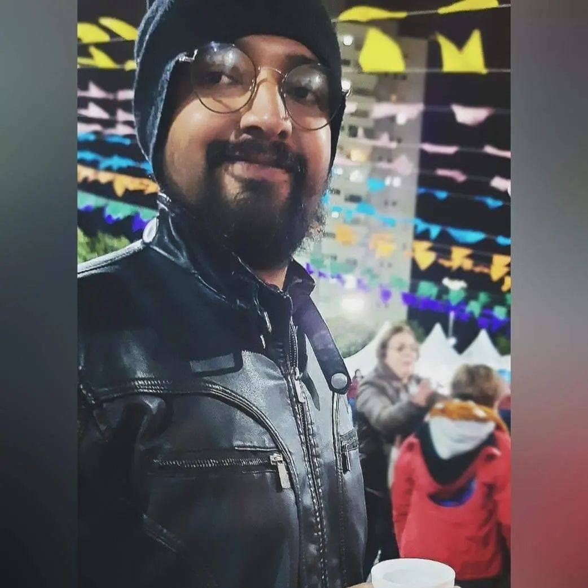

Julio Cesar Pereira

Cursos
UFABC
Curso Capacitação em Geotecnologia
Duração: Fev/2022 - Nov/2022
Alura Curso Online
Curso Python para orientação objetos
Duração: 93h
Habilidades
Qgis
Processamento Digital de Imagens
Autocad
Banco de Dados
Python
Controle de Qualidade
Resumo Profissional
Sobre
Profissional com experiência como Auxiliar de Manutenção na Prefeitura de Jacareí, combinando habilidades práticas com conhecimentos técnicos.
Aluno do curso tecnólogo de Geoprocessamento, buscando integrar teoria e prática para aprimorar as competências na área. Atualmente, desempenha
papel ativo como estagiário, aplicando os conhecimentos acadêmicos em situações do cotidiano profissional, demonstrando comprometimento e disposição
para aprender.
Experiência Profissional
Cargo: Estagiário
Empresa: Geopixel Sistemas Ltda
Período: Abr/2023 - Atualmente
Cargo: Auxiliar de Serviço Geral
Empresa: Prefeitura Municipal de Jacareí
Período: Set/2017 - Abr/2023
Cargo: Alimentador de Linha
Empresa: Acteco Ltda
Período: Mar/2015 - Abr/2015
Educação
Ensino Superior
Fatec Jacareí
Curso: Técnologo de Geoprocessamento
Período Jan/2022 - Dez/2024
Curso Técnico
Senai Jacareí
Curso de Aprendizagem Industrial
Período Jan/2010 - Dez/2011
Ensino Médio
Escola Estadual Verdinho
Concluído